18/01/2022 — Hội chứng vành cấp nào gây tổn thương cơ tim nhiều hơn? Ca đạt tiêu chuẩn STEMI, hay ca có điện tâm đồ “bình thường”?
Bản dịch tiếng Việt của bài "Which ACS had more myocardial damage? The one that meets STEMI criteria, or the one with the ‘normal’ ECG?" – Dr. Smith’s ECG Blog. Giữ nguyên toàn bộ 11 hình ảnh của bản gốc.
Ca này do Jesse McLaren cung cấp, với một phần đóng góp của Smith.
Dr McLaren (@https://twitter.com/ECGcases) là bác sĩ cấp cứu tại Toronto, đặc biệt quan tâm đến cải tiến chất lượng và giáo dục về tim mạch cấp cứu. Ông là Phó Giáo sư (Assistant Professor) tại Đại học Toronto.
2 ca bệnh
Hai bệnh nhân đến viện vì đau ngực. Bạn sẽ đọc
điện tâm đồ của họ như thế nào, và ai bị tổn thương cơ tim nhiều hơn?

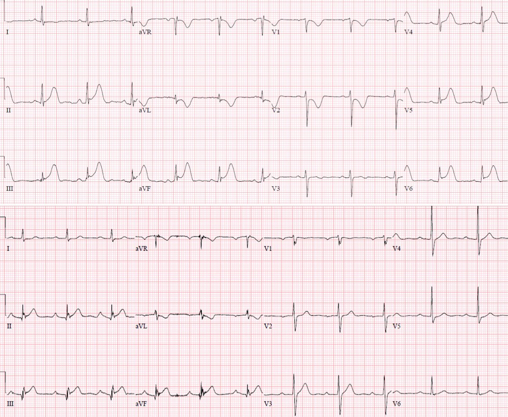
Bệnh nhân 1: 55 tuổi,
đau ngực từng cơn trong 5 ngày, nay đau liên tục. Dấu hiệu sinh tồn bình thường.
Điện tâm đồ cũ, điện tâm đồ nền

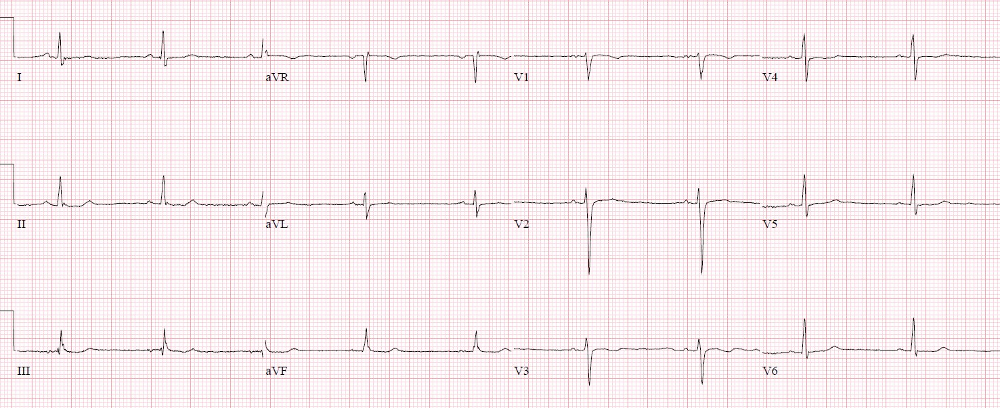
Điện tâm đồ cấp tính hôm nay:

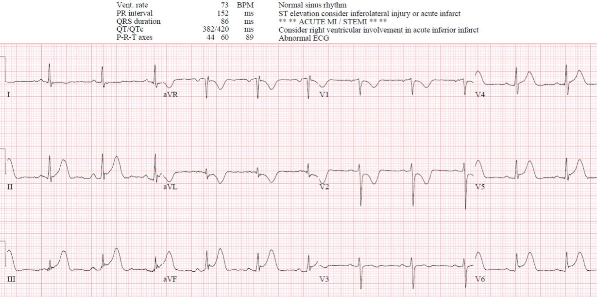
Nhịp xoang bình thường, dẫn truyền bình thường,
tăng tiến sóng R bình thường và điện thế bình thường. Có ST chênh lên dạng lõm
ở cả ba chuyển đạo thành dưới, đạt tiêu chuẩn STEMI, kèm
sóng T tối cấp, cùng ST chênh xuống soi gương và sóng T đảo ngược ở aVL;
ST chênh xuống và sóng T đảo ngược ở V1-2 do nhồi máu thành sau, và ST chênh lên
cùng sóng T tối cấp ở V5-6 do nhồi máu thành bên.
Đây là một OMI STEMI dương tính (STEMI (+) OMI) dưới-sau-bên
rõ ràng, được máy xác định và được bác sĩ cấp cứu
nhận ra. Bệnh nhân được điều trị bằng liệu pháp kháng tiểu cầu kép, heparin và nitroglycerin,
và phòng thông tim (cath lab) được kích hoạt.
Hai phút sau, cơn đau ngực hết và
điện tâm đồ được ghi lại:

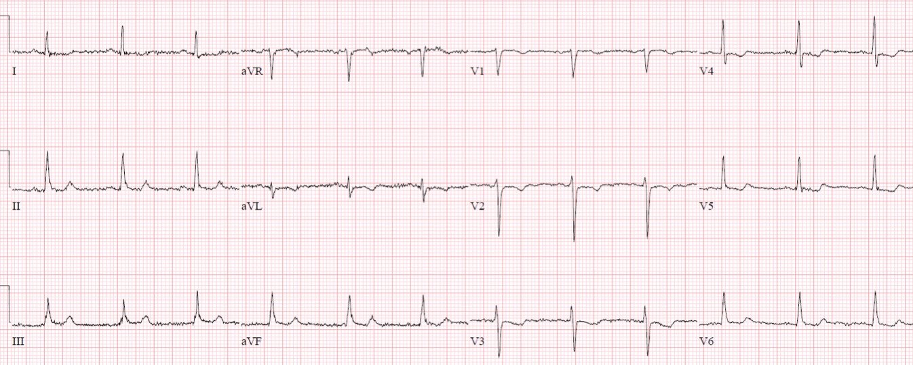
Điện tâm đồ này, nếu được ghi riêng lẻ, sẽ rất đáng nghi ngờ thiếu máu cục bộ cấp, nhưng không phải OMI
ST chênh lên ở thành dưới-bên đã hồi phục, nhưng
vẫn còn ST chênh xuống soi gương ở aVL, và ST chênh xuống nhẹ ở các chuyển đạo trước tim.
Mặc dù chỉ bị tắc thoáng qua, với đoạn ST đạt tiêu chuẩn STEMI, bệnh nhân vẫn được chuyển đến phòng thông tim, và trước thủ thuật lại có thêm một cơn đau ngực, kèm điện tâm đồ tái xuất hiện OMI STEMI dương tính (STEMI(+)OMI) dưới-sau-bên:

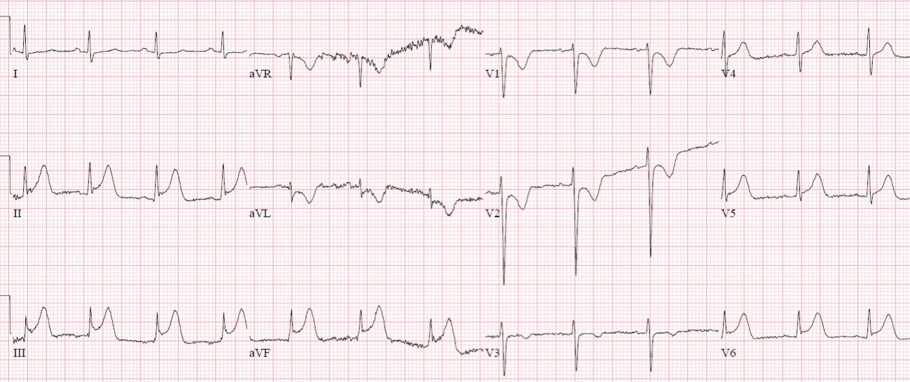
Trên phim chụp mạch vành có tắc 99%
động mạch mũ, nhưng vẫn còn dòng chảy TIMI-3, và đã được đặt stent. Mọi giá trị troponin đều
hoàn toàn bình thường, ở mức 2 ng/L, chỉ nhỉnh hơn giới hạn phát hiện (LoD). (Xét nghiệm troponin độ nhạy cao Abbott Alinity, LoD = 1.6 ng/L; URL = 26 ng/L ở nam, 16 ng/L ở nữ).
Lưu ý rằng chúng tôi chưa bao giờ gọi ca này là “STEMI”, vì nó thực sự chưa bao giờ đạt định nghĩa nhồi máu cơ tim cấp!!
Định nghĩa nhồi máu cơ tim đòi hỏi ít nhất một giá trị troponin tăng, nên thực ra bệnh nhân đã được “loại trừ” nhồi máu cơ tim cấp!
Điện tâm đồ sau thông tim:

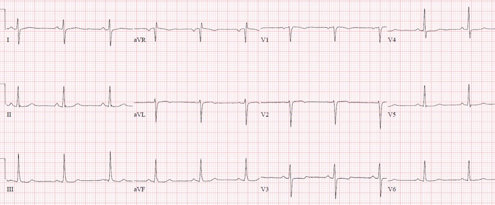
Trở về như điện tâm đồ nền, không có sóng Q hay sóng T đảo ngược do tái tưới máu.
Nếu đứng riêng, đây sẽ là một điện tâm đồ không có giá trị chẩn đoán.
Chẩn đoán ra viện: “STEMI” (về mặt kỹ thuật thì KHÔNG phải)
Hãy tưởng tượng nếu điện tâm đồ đầu tiên đó chưa từng được ghi. Bệnh nhân này có thể đã bị cho về nhà, rồi tái nhồi máu tại nhà và tử vong.
Đau thắt ngực không ổn định vẫn tồn tại!!
Đau thắt ngực không ổn định có thể có ST chênh lên thoáng qua
Bệnh nhân 2: 65 tuổi,
đau ngực 30 phút, dấu hiệu sinh tồn bình thường. Điện tâm đồ cũ rồi đến điện tâm đồ mới:

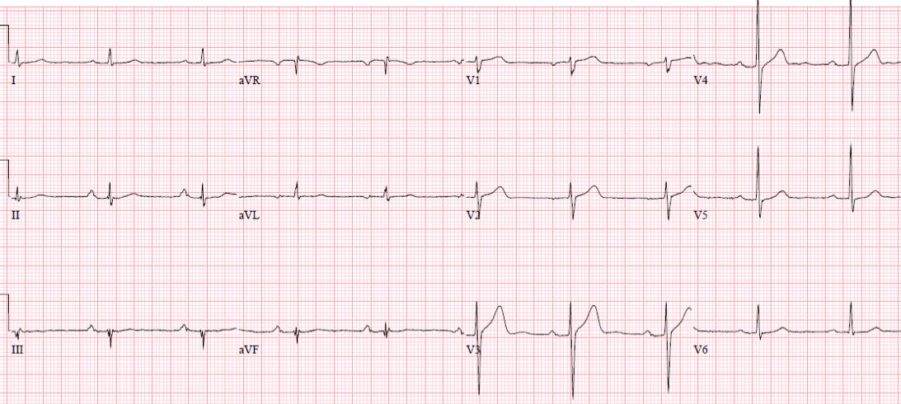

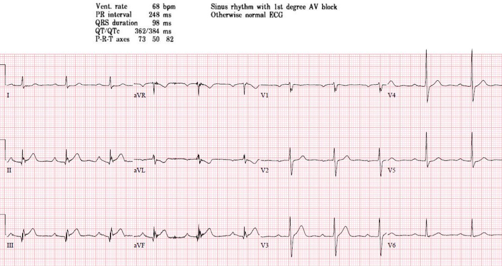
Nhịp xoang bình thường, kèm blốc AV độ 1 (1st degree AV
block), ngoài ra dẫn truyền bình thường, trục bình thường, tăng tiến sóng R bình thường, điện thế bình thường.
So với điện tâm đồ trước, có ST chênh lên dạng lõm kín đáo ở thành dưới, không đạt tiêu chuẩn STEMI. Nhưng cũng có sóng T tối cấp ở thành dưới (lớn so với phức bộ QRS và so với điện tâm đồ nền), và có ST chênh xuống soi gương nguyên phát mới xuất hiện cùng sóng T đảo ngược ở aVL, dấu hiệu rất nhạy cho OMI thành dưới. Cũng có thể có giả bình thường hóa đoạn ST ở V2 do nhồi máu thành sau.
Dù STEMI âm tính và được máy
đọc là bình thường, bác sĩ vẫn lo ngại nên cho aspirin và ghi lại điện tâm đồ 20 phút sau lần đầu:

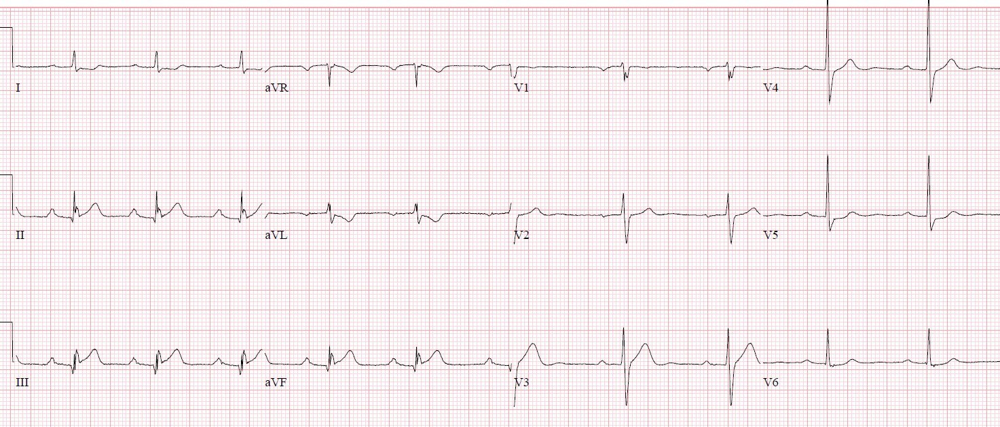
Điện tâm đồ tương tự và bệnh nhân vẫn còn đau. Được điều trị bằng
liệu pháp kháng tiểu cầu kép, heparin và kích hoạt phòng thông tim: tắc 100% RCA đoạn giữa. Troponin
đầu tiên 26 (giới hạn bình thường) và đỉnh 55,000, kèm giảm động vùng đáy thành dưới.
Troponin I đỉnh 55,000 ng/L là mức đi kèm với nhồi máu cơ tim cấp rất rộng (mất rất nhiều cơ tim).
Điện tâm đồ
lúc ra viện:

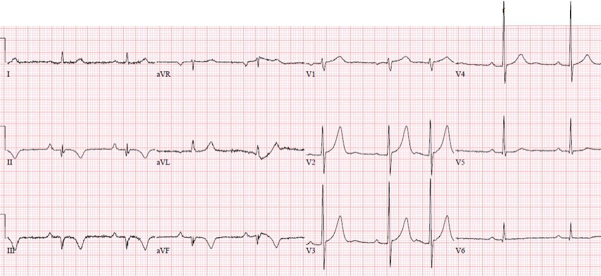
Sóng QS
ở thành dưới và sóng T đảo ngược do tái tưới máu, kèm sóng T lớn soi gương ở aVL;
và sóng T lớn ở V2-3, soi gương với sóng T đảo ngược do tái tưới máu thành sau.
BÀN LUẬN
Theo
mô hình hiện hành dựa trên tiêu chuẩn milimét trên điện tâm đồ, bệnh nhân thứ nhất bị STEMI, cần tái tưới máu cấp cứu,
còn bệnh nhân thứ hai không bị STEMI nên có thể được điều trị tái tưới máu
trì hoãn. Nhưng bệnh nhân thứ hai có một động mạch tắc hoàn toàn, dẫn đến nhồi máu cơ tim
rộng dù được tái tưới máu nhanh, và nếu nhập viện với chẩn đoán “NSTEMI” rồi chụp mạch vành
vào ngày hôm sau thì có thể đã tử vong. Theo các bản tóm tắt ra viện, vốn có vẻ dựa trên tổn thương thủ phạm được tái tưới máu nhanh, cả hai
bệnh nhân đều bị “STEMI”, dù bệnh nhân thứ nhất chưa bao giờ tăng troponin và
bệnh nhân thứ hai không đạt tiêu chuẩn STEMI.
Chúng ta cần bắt đầu
từ bệnh học nền tảng. Cả hai bệnh nhân đến khoa cấp cứu (ED) với nhồi máu cơ tim
do tắc (Occlusion MI), tức là “tắc cấp tính hoặc gần tắc một động mạch vành
thượng tâm mạc chính, với tuần hoàn bàng hệ không đủ, dẫn đến hoại tử sắp xảy ra
của vùng cơ tim phía hạ lưu nếu không được tái tưới máu cấp cứu.” Cả hai bệnh nhân
cũng có điện tâm đồ chẩn đoán OMI khi đến khoa cấp cứu: thay vì phân chia sai lầm
các điện tâm đồ này thành STEMI và NSTEMI dựa trên tiêu chuẩn milimét
của ST chênh lên, ta có thể thấy cả hai đều có ST chênh lên ở thành dưới ở một mức độ nào đó
kèm sóng T tối cấp và thay đổi soi gương ở aVL. Cả OMI STEMI dương tính (STEMI(+)OMI) lẫn OMI STEMI âm tính (STEMI(-)OMI) đều có các đặc điểm lâm sàng, xét nghiệm và siêu âm tim tương tự nhau.
Hai ca này có kết cục khác nhau, không phải dựa trên ca nào đạt tiêu chuẩn
STEMI, mà dựa trên OMI nào được tái tưới máu nhanh.
Bệnh nhân thứ nhất
đến viện với STEMI(+)OMI nhưng được tái tưới máu tự phát nhanh đến mức, cùng với
chụp mạch vành sau đó, đã tránh được hoàn toàn hoại tử cơ tim—không tăng
troponin, không có bằng chứng nhồi máu hay tái tưới máu trên điện tâm đồ. (Nhưng nếu ca
“STEMI thoáng qua” này không được kích hoạt phòng thông tim nhanh, bệnh nhân có thể đã tắc lại
và phát triển một ổ nhồi máu lẽ ra có thể phòng ngừa được).
Thực tế, ca này thậm chí không đạt định nghĩa chính thức về nhồi máu cơ tim (!) theo Định nghĩa toàn cầu lần thứ 4, vốn đòi hỏi troponin tăng rồi giảm với ít nhất một giá trị trên bách phân vị thứ 99. Thực chất, đây là đau thắt ngực không ổn định có ST chênh lên. Nếu bệnh nhân được ghi điện tâm đồ vào những thời điểm khác, ca này đã bị bỏ sót hoàn toàn
Bệnh nhân thứ hai đến viện với
STEMI(-)OMI nhưng bị tắc hoàn toàn, kéo dài dù đã xử trí ban đầu,
và chỉ được giải quyết tại phòng thông tim—dẫn đến tăng
troponin đáng kể dù được chẩn đoán nhanh, cùng bằng chứng nhồi máu và tái tưới máu trên điện tâm đồ. Thay vì cả hai
bệnh nhân đều có chẩn đoán ra viện là “STEMI”, thì bệnh nhân thứ nhất bị đau thắt ngực
không ổn định do “OMI ngắn đến mức hoặc được điều trị nhanh đến mức troponin không
tăng, nhồi máu cơ tim được ngăn chặn”, còn bệnh nhân thứ hai bị STEMI(-)OMI.

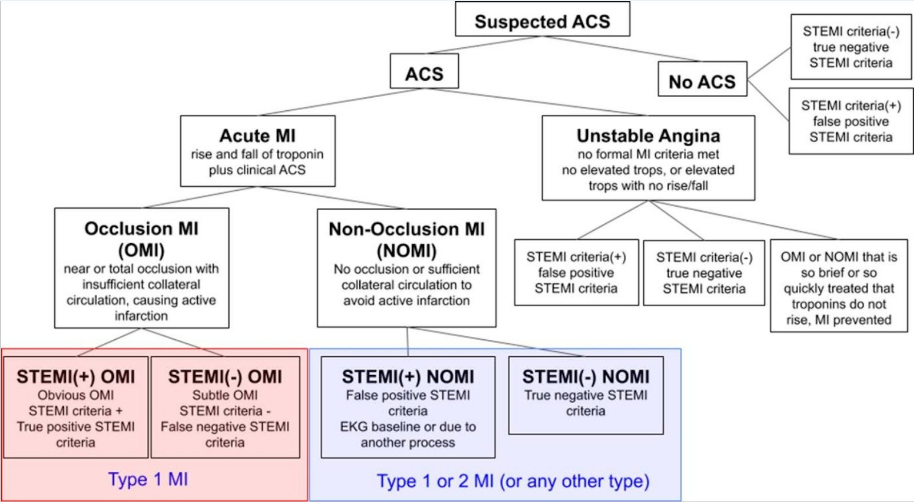
Điều cần nhớ
1.
Kết quả đọc
tự động không đáng tin cậy, kể cả những bản được đọc là “bình thường”
2.
Tiêu chuẩn
STEMI có độ nhạy kém đối với nhồi máu cơ tim do tắc (Occlusion MI)
3.
ST chênh xuống
soi gương nguyên phát ở aVL rất nhạy cho OMI thành dưới, và có thể
làm nổi bật ST chênh lên kín đáo ở thành dưới và sóng T tối cấp
4.
Tắc mạch vành
cấp là một quá trình động, có thể tái tưới máu tự phát và
tắc lại, và các “STEMI thoáng qua” có nguy cơ tắc lại
5.
Troponin
ban đầu không đáng tin cậy đối với STEMI/OMI, và troponin xét nghiệm nhiều lần có thể bỏ sót đau thắt ngực
không ổn định do tắc thoáng qua
6.
Nhồi máu cơ tim
nên được phân loại dựa trên bệnh học nền tảng OMI/NOMI, không phải
tiêu chuẩn STEMI/NSTEMI, và điều này nên được phản ánh trong chẩn đoán ra viện để theo dõi chính xác và rút kinh nghiệm từ các ca bệnh
TÀI LIỆU THAM KHẢO
1.
Bischof
và cs. ST depression in aVL differentiates inferior ST-elevation myocardial
infarction from pericarditis. Am J Emerg Med, 2016
2.
Meyers
và cs. Comparison of the ST-elevation myocardial infarction (STEMI) vs NSTEMI
and Occlusion MI (OMI) vs NOMI paradigms of acute MI. J of Emerg Med, 2021